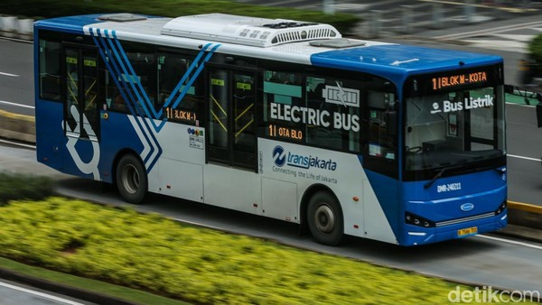
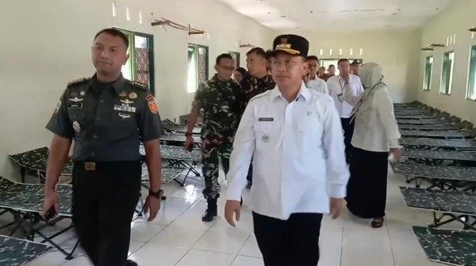
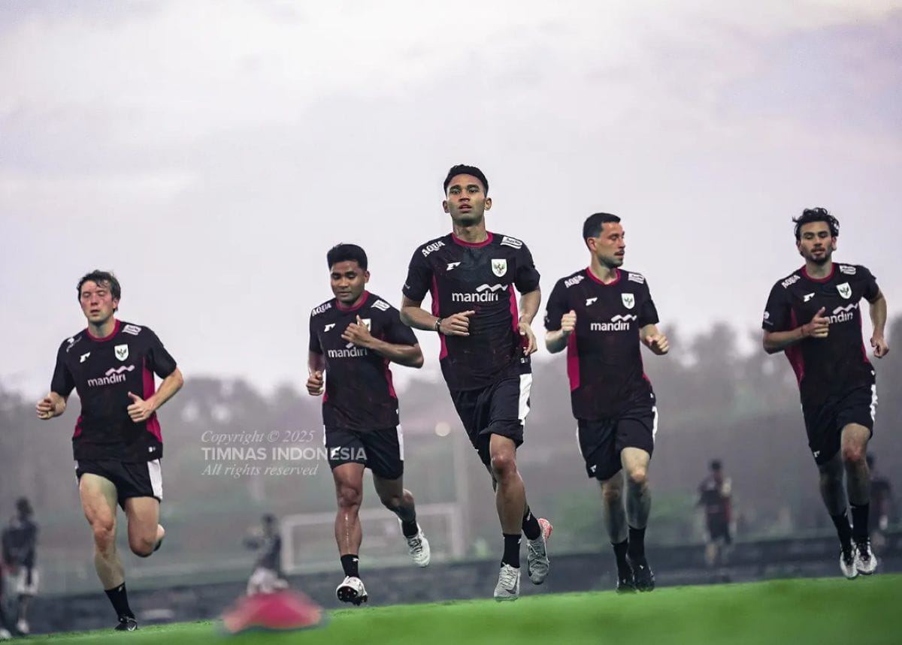

Berita Akhir-Akhir Ini

Walkot Depok Cek Lokasi Program Barak Militer di Divisi I Kostrad Cilodong
Nasib Tim ASEAN di Kualifikasi Piala Asia U-23 2026 - Timnas U-23 Indonesia di Grup Panas, Thailand dan Vietnam Mudah Lolos

Breaking News: 4 Pemain Timnas Indonesia Batal Ikut TC di Bali Jelang Lawan China, Ini Nama-namanya!
31 Kode Redeem FF Max Terbaru 24 Mei: Klaim Diamond dan Skin Senjata Elite
TERPOPULER
Wakil Ketua DPR: Perang India-Pakistan Tak Ganggu Pemberangkatan Haji
Wakil Ketua DPR RI Cucun Ahmad Syamsurijal memastikan perang antara India dengan Pakistan tidak akan mengganggu penerbangan pemberangkatan jemaah haji Indonesia ke Arab Saudi.
Driver Ojol di Medan Dapat Order Antar Paket Mayat Bayi
Pengemudi (Driver) ojek online di Medan viral di media sosial, karena mendapat order mengantar paket yang ternyata berisi mayat bayi laki-laki.
Total Rp 6,8 T Disita Kejagung Terkait TPPU Duta Palma
Kejaksaan Agung (Kejagung) menyita Rp 479 miliar terkait kasus tindak pidana pencucian uang (TPPU) PT Duta Palma Group. Total, Kejagung menyita Rp 6,8 triliun dalam kasus ini.
Apakah Pindah Rumah Harus Ganti KK dan KTP? Ini Penjelasan Dukcapil
Perencana Ahli Madya Direktorat Jenderal Kependudukan dan Pencatatan Sipil (Ditjen Dukcapil) Ahmad Ridwan mengatakan, penduduk wajib mengganti KK dan KTP jika pindah rumah yang bertujuan untuk menetap